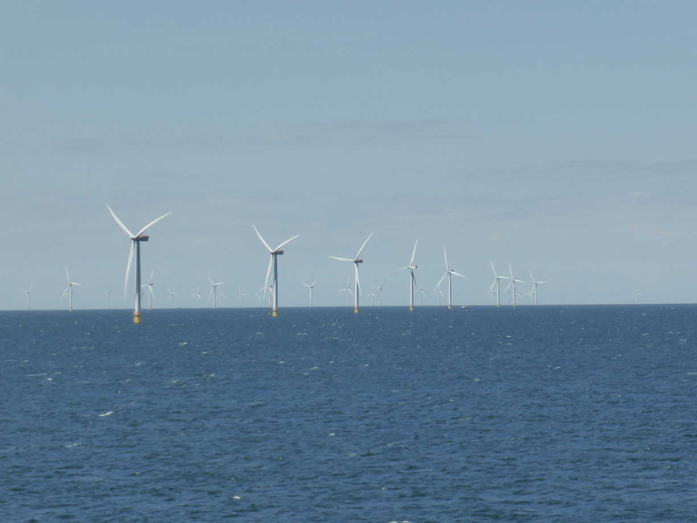
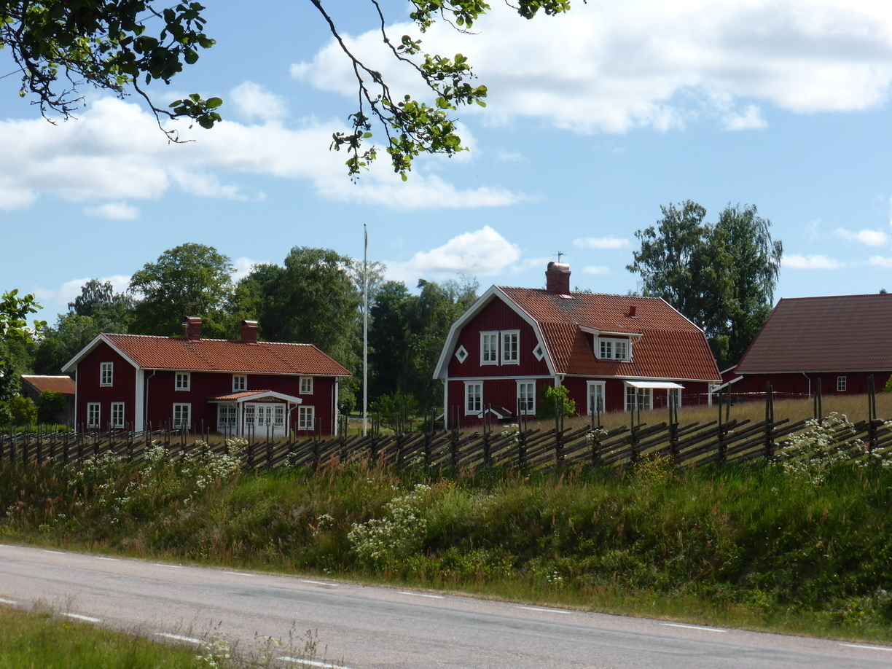

Hej Hej
Tag 13
Grenaa - Varberg(Schweden) ~ 10 km
Heute ging es mit der Fähre über das Kattegat nach Varberg an der schwedischen Westküste. Da die Fähre erst um 14:20 Uhr ablegte hatte ich noch ein wenig Zeit am Vormittag. Ausschlafen ging leider nicht, da die Sonne das Zelt schon um kurz vor Acht unerträglich machte. Nachdem ich noch ein wenig auf dem Campingplatz rumgelungert hatte, ging es zunächst nach Grenaa.
In Grenaa hatte ich bei einem Besuch in Kebapladen und beim LIDL die Gelegenheit meine restlichen dänischen Kronen loszuwerden. Anschließend bin ich langsam in Richtung Hafen geradelt und habe mich noch eine Weile auf eine Bank gesetzt.
Anschließend ging es zur Fähre, wo ich auf die Spur für Motorräder und Fahrräder geleitet wurde. Dort war außer mir noch der nette Däne Kai. Dieser war gerade mit seinem Motorrad auf dem Weg zum Sommerhaus einer Freundin. Kai war bereits im Ruhestand und hatte zuvor in Afrika als Entwicklungshelfer gearbeitet. Er war weit gereist und konnte viel von seinen Reisen erzählen. Zudem war er ebenso an meiner Reise interessiert, sodass die Fährüberfahrt schneller um ging als erwartet.
Wir fragten uns, warum Windkraftanlagen immer Weiß gestrichen sind. Ich persönlich fände einen bunten Windpark viel netter. 
In Schweden bat sich auch wieder die Gelegenheit ein Photo von meinem Drahtesel mit dem Länderschild zu machen.
Anschließend ging es zu einem 3 km entfernten Campingplatz, den ich zuvor rausgesucht hatte. Als ich gerade mit dem Aufbau des Zeltes beginnen wollte, kam die nette Besitzerin nochmals vorbei. Sie sagte es würde in der Nacht Regen geben und bat mir an in einer der Hütten zu übernachten zum selben Preis. So kam es, dass ich meine erste Nacht in Schweden in einer Hütte mit Meerblick verbringen durfte. Kai: Maybe this is one of the houses we saw from the ferry :P
Blick aus dem Schlafzimmerfenster
Mäh!
Tag 14
Varberg - Bexet 90 km
Am Anfang führte der Weg noch vorwiegend an Feldern und Höfen vorbei, doch schon bald ging es vermehrt durch Wälder.
Schließlich kam ich an einem Campingplatzschild vorbei. Dieses führte mich 4 km über einen Schotterweg, durch einen kleinen Ort und am Ende zu einem Campingplatz. Dort war, wie ich feststellen musste, niemand zu Hause. Lediglich ein deutsches Paar mit Wohnmobil, die ebenfalls gerade angekommen waren. Ich beschloss das Zelt schon mal aufzubauen, denn das Wohnhaus der Besitzer sah nicht so aus, als wären diese verreist. Wir versuchten es in Regelmäßigen Abständen am Haus, jedoch immer ohne Erfolg. Das Ganze wäre auch nur halb so blöd gewesen, wäre das Toilettenhaus nicht verschlossen gewesen. Am nächsten Morgen, als ich gerade zur Abfahrt bereit war, kam dann tatsächlich ein älterer Herr vorbei und verteilte eine Runde Toilettenschlüssel. Ich nahm den Schlüssel dankend an und versuchte ihm klar zumachen, dass ich bald fahren wolle. Das war nicht ganz so leicht, da er nur Schwedisch sprach. Er schien es zudem eilig zu haben und war schnell wieder weg. Nach dem Toilettenbesuch versuchte ich noch jemanden am Haus zu erwischen. Leider ohne Erfolg. Also gab ich meinen Schlüssel den beiden Deutschen und fuhr davon.
Tag 15
Bexet - Os 109 km

Als ich am Ende des Tages auf der Suche nach einem Platz für mein Zelt war und mein Blick oft links und rechts der Straße gerichtet hatte, sah ich sogar eine Elchkuh. Leider war diese schneller im Wald verschwunden, als ich die Kamera zücken konnte.
Den Zeltplatz fand ich am Ende am kommunalen Badeplatz in Os. Dort gab es eine frisch gemähte Wiese, ein Trockenklo und einen Platz zum Baden. Auf einem Aushang stand neben einigen anderen Regeln, dass das Campen hier nicht erlaubt sei. Ich baute mein Zelt also etwas weiter entfernt vom Parkplatz am Rande der Wiese auf. Sollte ein Sheriff vorbei kommen würde er sich also erstmal mit den Holländern befassen, die mit ihrem Wohnmobil auf eben jenem Parkplatz standen. Aber da es immer noch keine Saison war störte sich auch keiner an den Campern.
Tag 16
Os - Lemnhult 107 km
Heute sollte es endlich zum Ferienhaus der Familie in Lemnhult gehen. Und es sollten auch nur noch 80 km bis dort sein. Also ging ich den Tag zunächst recht entspannt an.
Kurz nach Asa wurde ich durch das Navi auf einen Schotterweg geleitet. Dies ist nicht ungewöhliches, da in Schweden nicht jede Straße alsphaltiert ist. Somit hatte ich auch in den Einstellungen die Option Unbefestigte Straßen vermeiden abgewählt. Nach ca. 7 km von guter Schotterstraße kam ich jedoch an einem Wanderweg, der mit dem Fahrrad nicht befahrbar war. Zunächst versuchte ich ob es nicht eventuell möglich wäre das Rad über den Wanderweg zu schieben. Aber schnell wurde klar, dass ich alles wieder zurück musste. Wieder an der befestigten Straße angekommen ließ ich mir die Route erneut berechnen (ohne Schotterwege). Die Umfahrung kostete mich weitere 20 km.
Lupinen am Straßenrand. Ein häufiges Bild
Verlassene Häuser. Nicht ganz so häufig aber auch nicht selten
Endlich am Haus angekommen hieß es dann nochmals zelten, da der Schlüssel für das Haus erst am Montag abgeholt werden konnte.
Unsere neugierigen Nachbarn